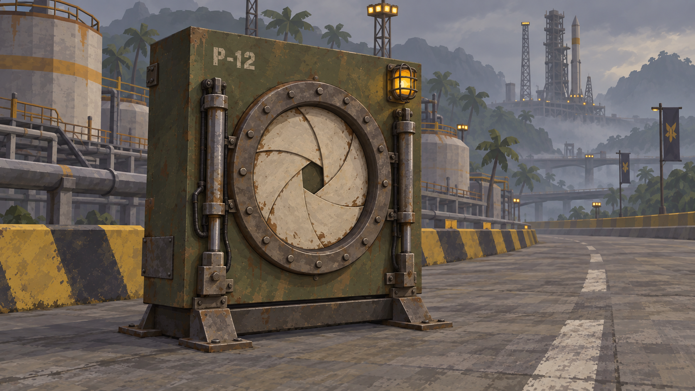
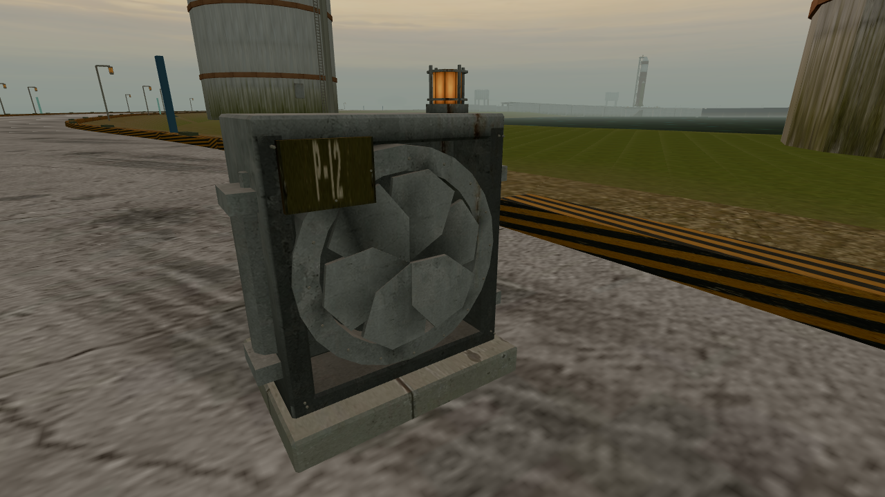
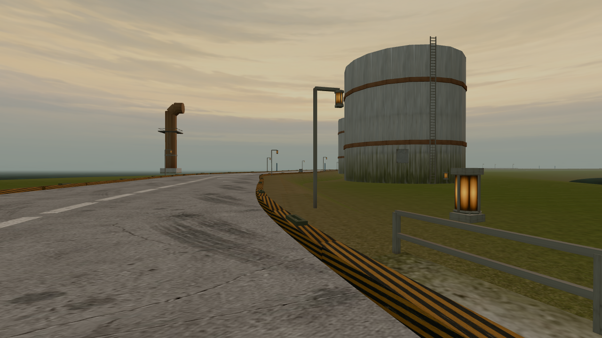

Pair 1: compare the device construction. Pair 2: identify what power the device gives at 120 m and report confidence. Labels and mapping withheld. Pair 1 camera match is estimated from a generated hero; Pair 2 uses an identical measured camera. No runtime changes shipped.


